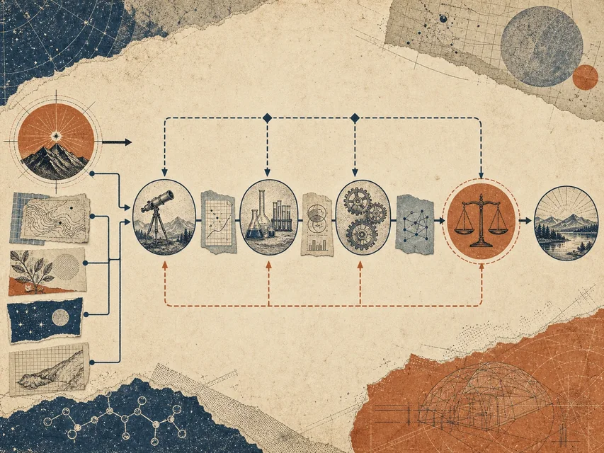
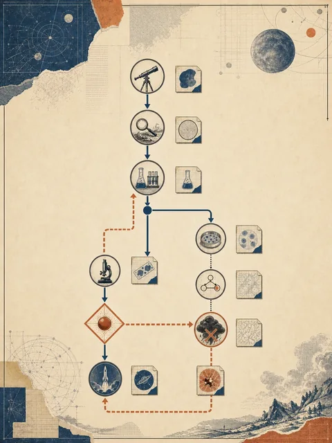

看得见结果
状态为 unknown；理由只写“私有网络访问不等于客户环境部署”
把第二周的一次调用展开成可检查的节点
 VER. 2608
Built with impress.js
VER. 2608
Built with impress.js
本节结束时，写清从什么材料开始、每步留下什么、何时继续、谁判断结束
状态为 unknown；理由只写“私有网络访问不等于客户环境部署”
不知道查过哪些来源、怎样提取和比较
下一位处理者不知道应补哪一类证据
工作流的第一步不是画箭头，而是留下来源清单、证据摘录和待核实项，让下一位知道从哪里接手
交给 AI 或同伴前，写清任务、材料、禁做项、完成标准和采用者
判断现有证据能否支持“客户环境部署”，供周会讨论
待核实主张、两条模拟来源和 2026-06-01 之后的核查范围
只使用可定位材料；“私有访问”不能自动改写成“私有部署”
每个判断能回到来源；证据不足时保留 unknown
核查者整理证据，周会负责人决定是否采用
工作流写明输入、每步动作和产物，也写明缺少什么就不能继续
别人能检查每一步读取了什么、做了什么、留下什么
下次核查其他产品时，可以替换来源后重复这些步骤

只要输入、动作、产物和交接条件都写出来，别人就能检查并重复这项任务
来源清单、证据摘录和最终判断不是同一种东西，检查时不能互相替代
任务开始时能够被节点读取的材料、数据或状态
一次能够描述、执行并检查的局部动作
节点完成后留下的可被下一步使用的对象
下一节点需要的材料、判断、权限或状态条件
对节点的执行、判断或批准负责的角色
满足完成标准、能够交给使用者的结果
“整理资料”太大，“把三份来源按字段提取”才有机会被复核
节点完成后新增哪份文件、记录或判断
节点读取哪些对象
主要动作不混入另一项判断
完成后留下什么对象
谁可以确认它完成
如果一个节点同时搜索、摘录、比较并下结论，出错时不知道错在哪；如果每次点击都算一个节点，又没人愿意维护
中间产物让下一步知道已经完成什么，还缺什么
记录官方说明与媒体转述的主体、日期、位置和访问状态
保留“供应商云＋私有网络端点”和“企业级私有访问”原文
缺少“服务运行在客户环境”的直接证据
没有中间产物，错误就只能从最终答案倒推
依赖说明下一步缺什么、等谁和何时可以继续
下一节点需要上一节点产生的对象
例如没有来源清单，就无法抽取证据
下一节点要等人确认规则或取舍
例如没有确认字段含义，就不能批量清洗
下一节点要等授权、登录或人工批准
例如没有确认收件人，就不能发送消息

下一步需要某份材料或批准时，节点才有先后；不是因为卡片画在左边
画出关系之前，先说清楚下一步到底依赖什么
| 节点 | 产物 | 下一步依赖 |
|---|---|---|
| 获取来源 | 官方说明、媒体转述及访问状态 | 抽取节点需要可定位原文 |
| 抽取主张 | “供应商云”“私有网络访问”等原文片段 | 比较节点需要统一“运行位置”字段 |
| 比较来源 | 两条材料都未说明客户环境运行 | 人工判断需要看见证据缺口 |
| 形成判断 | unknown 与待补证据 | 周会负责人确认是否继续核查 |
每个箭头都应该能够回答“下一步缺少它会怎样”
待办清单只说要做什么，工作流还要说输入、产物、依赖和责任
搜索资料、整理资料、写总结、提交结果
完成状态往往只有“做了”或“没做”
来源清单、证据摘录、比较表、人工判断与最终记录
每一步都有对象和可以检查的完成条件
写下“搜索资料”还不够，还要留下包含标题、日期、链接和访问结果的来源清单
不写用什么开始、何时交付，流程可能继续包办通知、决策和维护
触发条件、输入对象和目标已经明确
只核查 Nova 是否支持客户环境部署，不自动发送结论，也不持续追踪产品更新
输出满足标准，并由责任人决定是否采用
用户临时改变目标、两条标准互相冲突或结论将被对外发布时，停下来由负责人判断
节点卡片让不同角色能够在不依赖口头记忆的情况下接手
| 字段 | 节点卡片内容 |
|---|---|
| 目标 | 节点完成后新增哪份文件、记录或判断 |
| 输入 | 读取哪些对象，格式和范围是什么 |
| 动作 | 由谁用什么工具完成什么操作 |
| 产物 | 输出什么对象，供谁继续使用 |
| 完成 | 看到什么证据才认为节点完成 |
| 失败 | 失败后停下、重试、回退或请求谁判断 |
输入是课堂声音，产物是原始文件
工具把声音转换为带时间位置的文本
模型形成标题、概念和待核实项
教师对照原始材料修正术语和遗漏
“整理笔记”被拆成节点后，错误可以定位到采集、转写、整理或复核阶段
一个流程可以把探索、执行、判断和批准交给不同角色
适合生成候选标题、从材料提取字段、改写文本和解释含义不明确的句子
适合按照已确认规则重复处理并留下执行记录
确定任务目标和完成标准，处理例外，并决定结果是否使用、发送或发布
不一定亲自执行，但必须能解释节点是否通过
先用共同案例填写五个问题，再把答案画成流程
| 问题 | 共同案例：跟踪 AI 企业应用 |
|---|---|
| 目标 | 判断 Nova 是否支持客户环境部署 |
| 输入 | 待核实主张、两条模拟来源、日期范围和术语规则 |
| 节点 | 获取来源、抽取主张、比较证据、形成判断 |
| 依赖 | 没有可访问原文不能抽取；没有统一字段不能比较 |
| 交接 | 责任人看见来源位置、冲突和缺口后决定是否采用 |
一张节点卡示范：抽取主张。输入是两条来源；动作是提取运行位置、访问方式和限制；产物是带原文位置的证据摘录；完成条件是每个字段都能回到材料；材料未写运行位置时保留 unknown
如果某一步还不能检查或交接，就继续补上它读取的材料、留下的产物和等待的批准
使用 Nova 模拟材料：从两条来源到 unknown 与待补证据
使用 2.1 的两条通知：从原文到日历草稿和确认状态
使用 20 个课程文件：从原目录、命名规则到预览和结果报告
只凭“当前判断 unknown，由负责人决定是否继续”还原可接手过程
写出目标、两条模拟来源、日期与术语限制、完成标准和最终采用者
画出获取、抽取、比较、判断四个节点，并为每步留下来源清单、证据摘录或待核实项
说明哪些箭头传递数据、等待判断或权限；缺少客户环境证据时标出停止、回退或接管
随机选一个节点说明下一位如何接手，再把这套对象语言带入 3.2 的真实任务画布